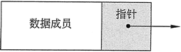

C++链表及其创建
链表的结点通常是动态分配、使用和删除的，允许链表在程序运行时增大或缩小。如果需要将新信息添加到链表中，则程序只需分配另一个结点并将其插入到系列中。如果需要从链表中删除特定的信息块，则程序将删除包含该信息的结点。
链表对数组和矢量的优点
尽管链表的编码和管理比数组更复杂，但它们有一些明显的优势。首先，链表可以容易地扩大或缩小。实际上，程序员并不需要知道链表中有多少个结点。它们只是根据需要在内存中创建。有人可能会争辩说，链表并不优于矢量（可在标准模板库中找到），因为它们也可以扩展或缩小。然而，链表对于矢量的优势是结点可以插入链表或从链表中删除的速度。要将值插入矢量的中间，需要将插入点之后的所有元素朝矢量的末尾移动一个位置，从而为新值腾出空间。同样，从矢量中删除一个值需要将删除点之后的所有元素都朝矢量的开始方向移动一个位置。而当一个结点插入链表或从链表中删除结点时，其他结点都不必移动。
数组和矢量都属于顺序存储结构（顺序表），由于链表和顺序表在存储结构上的差异，导致它们具有不同的特点，适用的应用场景也有所差异，感兴趣的小伙伴请猛击这里了解详情。
链表的结构
链表中的每个结点都包含一个或多个保存数据的成员。例如，存储在结点中的数据可以是库存记录；或者它可以是由客户的姓名、地址和电话号码等组成的客户信息记录。除了数据之外，每个结点还包含一个后继指针指向链表中的下一个结点。图 1 给出了单个结点的组成。

图 1 单个结点的组成
非空链表的第一个结点称为链表的头。要访问链表中的结点，需要有一个指向链表头的指针。从链表头开始，可以按照存储在每个结点中的后继指针访问链表中的其余结点。最后一个结点中的后继指针被设置为 nullptr 以指示链表的结束。
因为指向链表头的指针用于定位链表的头部，所以也可以认为它代表了链表头。同样的指针也可以用来定位整个链表，从头开始，后面跟着后续指针，所以也可以很自然地把它看作是代表了整个链表。nullptr 是 C++11 新增的一个关键字，专门替代 NULL、0 来初始化指针。和 NULL、0 相比，nullptr 可以使程序更健壮，具体原因请猛击这里了解详情。
图 2 给出了一个由 3 个结点组成的链表，其中显示了指向头部的指针，链表的 3 个结点以及表示链表末尾的 nullptr 指针。
图 2 链表结构图解
注意，图 2 中绘制的链表结点彼此非常接近，排列整齐。实际上，链表结点可能散布在内存的各个部分。
链表的C++表示
为了在 C++ 中表示链表，需要有一个表示链表中单个结点的数据类型。通过图 1 可以很自然地发现，这样一个数据类型不但需要包含要存储的数据结构，还要有一个指向另一个相同类型结点的指针。假设每个结点将存储一个类型为 double 的数据项，则可以声明以下类型来存放结点：
struct ListNode
{
double value;
ListNode *next;
};
在以上代码中，ListNode 就是要存储在链表中的结点的类型，结构成员 value 是结点的数据部分，而另一个结构成员 next 则被声明为 ListNode 的指针，它是指向下一个结点的后继指针。注意，C++ 中的 struct 不仅可以定义结构体，还可以定义类（只是通常不这么做）。在 C++ 中，struct 和 class 基本是通用的，只有几个细节不同，感兴趣的小伙伴请猛击这里了解详情。
ListNode 结构有一个有趣的属性，它包含一个指向相同类型数据结构的指针，因此可以说是一个包含对自身引用的类型。像这样的类型称为自引用数据类型或自引用数据结构。
在已经声明了一个数据类型来表示结点之后，即可定义一个初始为空的链表，方法是定义一个用作链表头的指针并将其初始化为 nullptr，示例如下：
ListNode *head = nullptr;
现在可以创建一个链表，其中包含一个结点，存储值为 12.5，如下所示：head = new ListNode; //分配新结点 head->value = 12.5; //存储值 head->next = nullptr; //表示链表的结尾接下来再看一看如何创建一个新结点，在其中存储 13.5 的值，并将其作为链表中的第二个结点。可以使用第二个指针来指向新分配的结点（其中将存储 13.5 的值），示例如下：
ListNode *secondPtr = new ListNode; secondPtr->value = 13.5; secondPtr->next = nullptr; //第二个结点是链表的结尾 head->next = secondPtr; //第一个结点指向第二个请注意，以上语句通过将其后继指针 secondPtr->next 设置为 nullptr，可以使第二个结点成为链表的结尾，通过 head->next = secondPtr; 语句将链表头的后继指针改为指向第二个结点。
下面的程序说明了如何创建一个简单的链表：
// This program illustrates the creation || of linked lists. #include <iostream> using namespace std; struct ListNode { double value; ListNode *next; }; int main() { ListNode *head = nullptr; // Create first node with 12.5 head = new ListNode; // Allocate new node head->value = 12.5; // Store the value head->next = nullptr; // Signify end of list // Create second node with 13.5 ListNode *secondPtr = new ListNode; secondPtr->value = 13.5; secondPtr->next = nullptr; // Second node is end of list head->next = secondPtr; // First node points to second // Print the list cout << "First item is " << head->value << endl; cout << "Second item is " << head->next->value << endl; return 0; }程序输出结果：
First item is 12.5
Second item is 13.5
使用构造函数初始化结点
我们知道，C++ 结构体可以有构造函数。对于定义链表结点类型的结构来说，如果能给它提供一个或多个构造函数，那将会带来很大的方便，因为这样将使得结点在创建时即可初始化。前文还曾经提到过，构造函数可以像常规函数一样，使用默认形参来定义，而为结点的后继指针提供一个默认的 nullptr 形参是很常见的。以下是 ListNode 结构的另一个定义：
struct ListNode
{
double value;
ListNode *next;
//构造函数
ListNode(double valuel, ListNode *nextl = nullptr)
{
value = value1;
next = next1;
}
};
通过该声明，即可使用以下两种不同的方式创建一个结点：
- 通过仅指定其 value 部分，而后继指针则默认为 nullptr。
- 通过指定 value 部分和一个指向链表下一个结点的指针。
当需要创建一个结点放在链表的末尾时，第一种方法是很有用的；而当新创建的结点将被插入链表中间某个有后继结点的地方时，第二种方法是很有用的。
通过这个新的结点声明，即可使用比以前的示例要短得多的代码，创建一个存储值 12.5 的结点，而它的后面则是一个存储值 13.5 的结点，示例如下：
ListNode *secondPtr = new ListNode(13.5);
ListNode *head = new ListNode(12.5, secondPtr);
ListNode *head = new ListNode(13.5);
head = new ListNode(12.5, head);
head = new ListNode(12.5, head);
该语句将从右到左评估，首先在构造函数中使用 head 的旧值，然后从 new 运算符返回的地址将被分配给 head，成为它的新值。创建链表
使用 ListNode 的构造函数版本，可以很轻松地创建一个链表，方法是读取文件中的值并将每个新读取的值添加到已经累积的值链表的开头。例如，使用numberList作为链表头，使用 numberFile 作为输入文件对象，则以下代码将读取存储在某个文本文件中的数字，并将它们排列在链表中：
ListNode *numberList = nullptr;
double number;
while (numberFile >> number)
{
//创建一个结点以保存该数字
numberList = new ListNode(number, numberList);
}
遍历链表
从链表头开始，涉及整个链表，并在每个结点上执行一些处理操作的过程被称为遍历链表。例如，如果需要打印某个链表中每个结点的内容，则必须遍历该链表。假设某个链表的链表头指针是 numberList，要遍历该链表，则需要使用另一个指针 ptr 指向链表的开头：
ListNode *ptr = numberList;
然后就可以通过使用表达式 *ptr 或者使用结构指针操作符 -> 来处理由 ptr 指向的结点。例如，如果需要打印在结点上的值，则可以编写以下代码：cout << ptr->value;
一旦在该结点的处理完成，即可将指针移动到下一个结点（如果有的话），其语句如下：ptr = ptr->next;
以上语句使用指向结点后继的指针来替换了指向该结点的指针，实现了结点之间的移动。因此，要打印整个链表，可以使用如下代码：
ListNode *ptr = numberList;
while (ptr != nullptr)
{
cout << ptr->value << " "; //处理结点（显示结点内容）
ptr = ptr->next; //移动到下一个结点
}
下面的程序演示了上面所介绍的各种技巧，即读取文件中的数字，将数字排列在链表中，然后通过遍历链表将数字显示在屏幕上。
// This program illustrates the building
// and traversal of a linked list.
#include <iostream>
#include <fstream>
using namespace std;
struct ListNode
{
double value;
ListNode *next;
// Constructor
ListNode(double value1, ListNode *next1 = nullptr)
{
value = value1; next = next1;
}
};
int main()
{
double number; // Used to read the file
ListNode *numberList = nullptr; // List of numbers
// Open the file
ifstream numberFile("numberFile•dat");
if (!numberFile)
{
cout << "Error in opening the file of numbers.";
exit (1);
}
//Read the file into a linked list
cout << "The contents of the file are: " << endl;
while (numberFile >> number)
{
cout << number << " ";
// Create a node to hold this number
numberList = new ListNode(number, numberList);
}
// Traverse the list while printing
cout << endl << "The contents of the list are: " << endl;
ListNode *ptr = numberList;
while (ptr != nullptr)
{
cout << ptr->value << " "; // Process node
ptr = ptr->next; // Move to next node
}
return 0;
}
程序输出结果：
The contents of the file are:
10 20 30 40
The contents of the list are:
40 30 20 10
关注公众号「站长严长生」，在手机上阅读所有教程，随时随地都能学习。内含一款搜索神器，免费下载全网书籍和视频。

微信扫码关注公众号